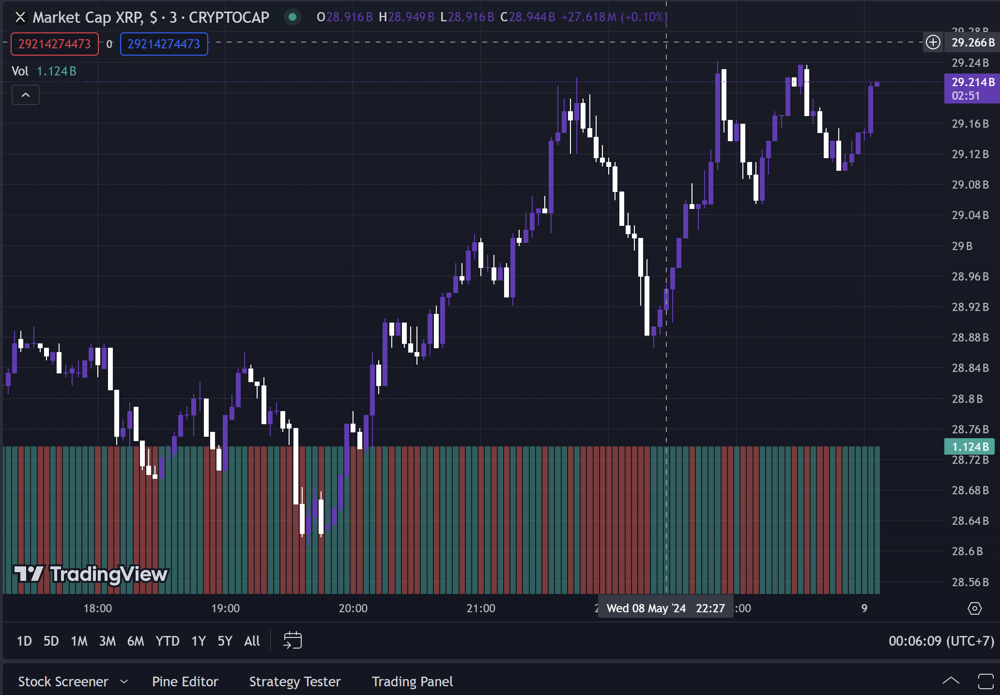

Bagaimana XRP Dapat Mencapai $10.000: Perkiraan Para Ahli Pasca Lonjakan Uji Coba Ripple-SEC
XRP Ripple berada di persimpangan jalan saat ini. Berakhirnya gugatan dengan SEC memang bisa menandai dimulainya era baru mata uang kripto ini. Beberapa prediksi kripto menempatkannya antara $100 dan $10,000 dalam beberapa bulan mendatang.
Jack adalah anggota komunitas kripto XRP yang terkenal. Dengan hampir 226,000 pengikut, dia baru-baru ini menyampaikan optimismenya tentang masa depan XRP. Menurut pakar kriptografi ini, harga aset kripto bisa mencapai antara $100 dan $10,000 setelah penyelesaian gugatan dengan SEC.
Jack mendasarkan prediksi ini pada: potensi tokenisasi, kemungkinan kejelasan peraturan untuk XRP. “Jika kita mempertimbangkan pasar tokenisasi, yang bisa mencapai triliunan, XRP senilai $1.000 tidak akan berarti apa-apa.” Perkiraan analis kripto ini juga bertumpu pada kemampuan Ripple untuk menggunakan XRP sebagai aset pertama untuk pembayaran lintas batas di Amerika Serikat.
Persidangan antara Ripple dan SEC dimulai beberapa tahun lalu, dengan tuduhan pelanggaran undang-undang sekuritas. Ripple dengan keras menentang tuduhan ini, dengan menyatakan bahwa XRP bukanlah suatu sekuritas. Saat ini, pertarungan hukum antara Ripple dan SEC berada pada titik balik. Ripple menentang usulan denda hampir 2 miliar dolar. “Kami siap melawan proposal ini dan membela integritas Ripple dan XRP”, kata Stuart Alderoty, direktur hukum Ripple. Kemenangan bagi perusahaan cryptocurrency Ripple dapat mendongkrak harga XRP. Hasil yang menguntungkan dalam gugatan ini berarti kejelasan peraturan untuk XRP, membuka jalan bagi penggunaannya secara luas. Sebaliknya, keputusan yang tidak menguntungkan dapat menimbulkan hambatan yang besar. Cukup untuk membuat investor mata uang kripto tetap waspada!
Sumber : https://coinmarketcap.com